Operation Spencer · 1.0.0-alpha
Terror de sobrevivência com estética PS1, controles tanque e câmeras fixas. Explore uma mansão adaptada para jogar sozinho ou cooperar com até quatro pessoas, escolhendo entre cinco personagens distintos.
Pesquisa e próximos passos: dossiê RE1 de 1996, dossiê navegável, roadmap por versão e roadmap HTML. A referência aprofundada cobre a Mansão 1F; metas futuras não são funcionalidades implementadas. O fluxo Blender conectado orienta a produção de modelos PS1 com fontes preservadas e validação no Godot.
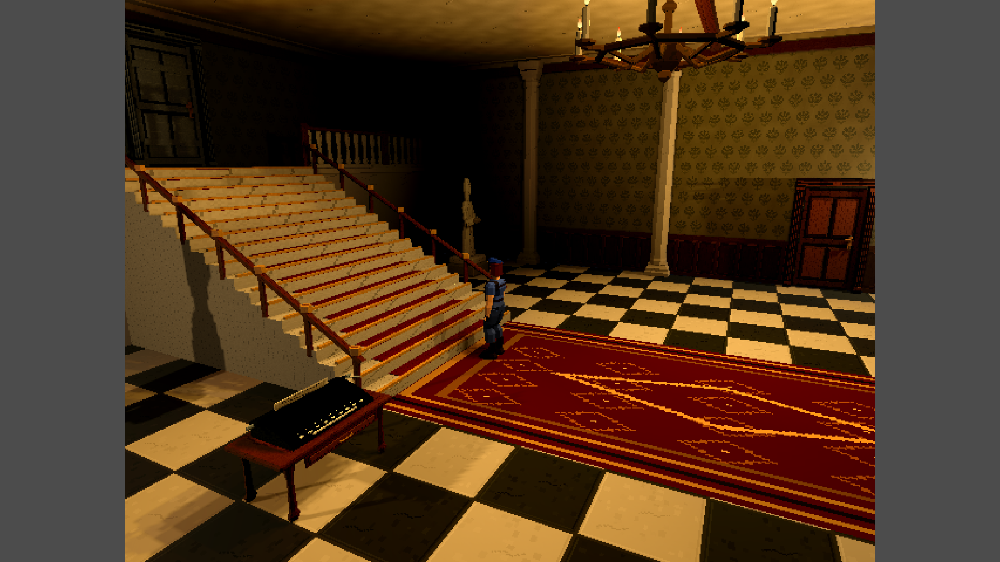
Cena real de gameplay renderizada no Godot por fixture dirigida. Captura de 15/10/2026, com arquitetura e estaturas revisadas; não comprova controles físicos.
Alpha experimental. Há evidências locais de compilação, importação, fixtures renderizadas e smoke ENet. Isso não homologa a experiência completa, Internet, desempenho ou todas as condições de multiplayer. Os resultados e suas datas estão em Testes e limitações. As releases automáticas distribuem tags, notas e fontes; sem binários nesta etapa.
A fase C1 do BOT coop acompanha o humano desde
o hall e ajuda contra os cães do Doghall numa sessão de teste isolada por ENet.
Consultas autônomas de inventário/mapa, exploração e respawn automático seguem no roadmap.
O modo de teste abre humano/BOT em janelas
redimensionáveis; VÍDEO permite Tela cheia/Janela. Na etapa 4.1, focar uma janela
transfere o controle humano e o áudio para ela; os demais personagens usam IA
e ficam mudos. Até quatro participantes locais: -BotCount 3 abre um humano e
três BOTs. O humano ocioso não volta à IA; os BOTs seguem o humano atual.
O launcher organiza duas janelas lado a lado, três com a inicial à esquerda
e duas empilhadas à direita, ou quatro em grade 2×2. Usa a área útil do monitor
principal; -Monitor escolhe outro e -Layout Livre desativa o encaixe.
Regras da alternância.
O log/chat do coop ocupa a borda
inferior esquerda, com quebra de linha e sem as mensagens selecionadas de
coleta, aparo/agarrão, mistura, confirmações de inventário e dicas de requisitos.
Campo de chat azul padrão do inventário/configurações e mensagens enviadas verdes.
O histórico comporta seis mensagens, com área inicial de texto de altura dobrada.
A máquina de escrever com seu móvel fica à esquerda do pé da escadaria do hall.
O baú e o spray de cenário do hall continuam removidos. Os baús restantes ficam
nas salas de medicamentos e de salvamento leste, preservando kits e conteúdo.
O balanceamento atual usa dano-base 8
na faca de combate e 20 na pistola 9 mm, no solo e no cooperativo.
Portal público · Começar no Windows · Controles · Cooperativo · Roadmap coop: BOTs, rádio e animações · Galerias e processo visual · Versões e releases
A mansão em jogo
São 34 ambientes e 35 conexões, distribuídos entre térreo, piso superior e subsolo. A autoridade mantém combate, itens, portas, puzzles, inventário e tempo na mesma simulação para solo e cooperativo. A missão e as conexões são uma adaptação original do recorte, com exploração, recursos limitados e extração coletiva.
Na escadaria central, os humanos caminham nos degraus, mesmo com o comando de corrida pressionado. Piso e patamar continuam permitindo correr.
Os disparos sobre obstáculos consideram altura e postura: tiros passam acima de móveis baixos quando a trajetória está livre, enquanto objetos altos e alvos encobertos mantêm a proteção.
O menu Esc usa um overlay sem painel sólido: no solo, pausa, escurece/desfoca o cenário e abafa a música; no cooperativo, apenas escurece e mantém a partida ativa. CONTINUAR, CONFIGURAÇÕES e SAIR seguem o estilo dos menus iniciais.
O painel de Configurações usa o metal do inventário, desenho de teclado e comandos reais. VÍDEO ajusta imagem, CONTROLES permite remapear teclas, SOM ajusta volumes; Esc e SAIR salvam e retornam. W/S e a roda do mouse ajustam a altura enquanto o personagem mira.
Em CONTROLES, RESTAURAR TECLAS PADRÃO pede confirmação antes de remover os vínculos personalizados. Funcionamento e testes.
Configurações compartilham os azuis e contadores verdes do inventário; teclas virtuais usam vermelho pelo mouse ou setas, com vínculos/indicativos verdes e aviso de captura pulsante. Inventário/baú mostram o cenário, com pausa/desfoque/abafamento somente no solo e detalhes do item em preto. Tooltips removidos. No baú, selecionar um item do inventário ou da própria lista mostra seus detalhes sem transferir. Enter guarda ou retira conforme o painel com foco; duplo clique e arraste continuam disponíveis. Seleção da lista. ←/→ alternam entre lista do baú e inventário; ↑/↓ navegam e atualizam os detalhes. Interface e evidências.
O baú anima a tampa antes de abrir a HUD, bloqueando somente seu usuário; fechar a HUD libera o personagem durante o fechamento. O cooperativo continua ativo. Toda interação exige que o personagem esteja de frente para o alvo, inclusive baús, portas, itens e puzzles. Todos os objetos exigem proximidade: até 0,65 unidade da borda/superfície ou do ponto de interação dos itens e puzzles. A regra vale na interface e no servidor. Critérios e evidências.
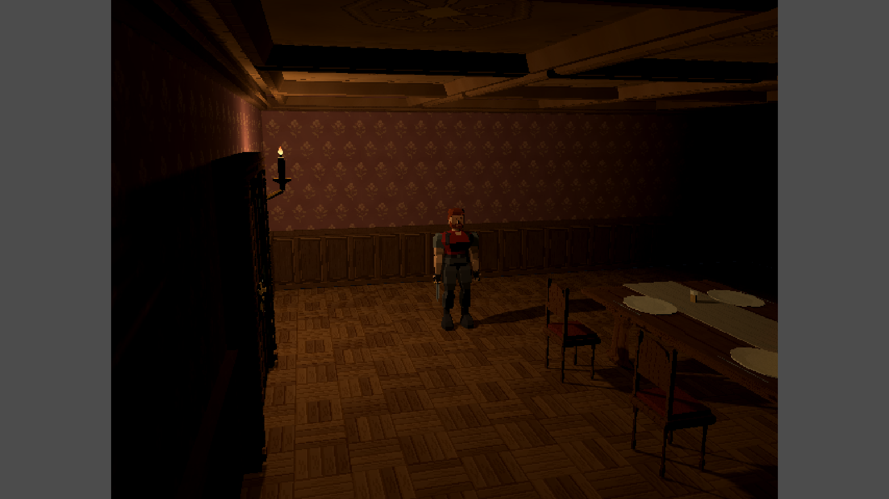
Jantar · cena de gameplay, fixture Godot com câmera de produção.
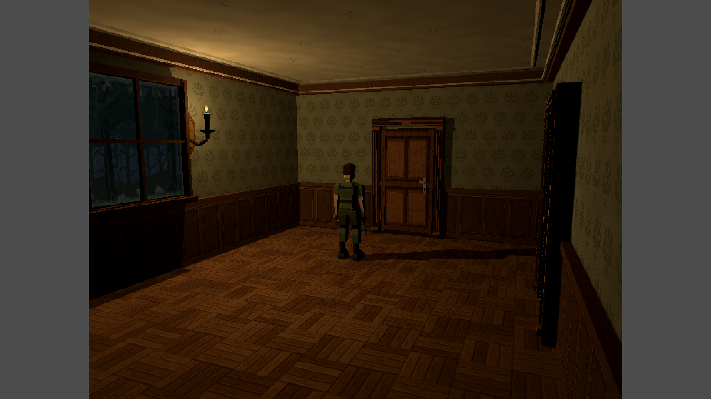
Doghall · cena de gameplay, fixture Godot com câmera de produção.
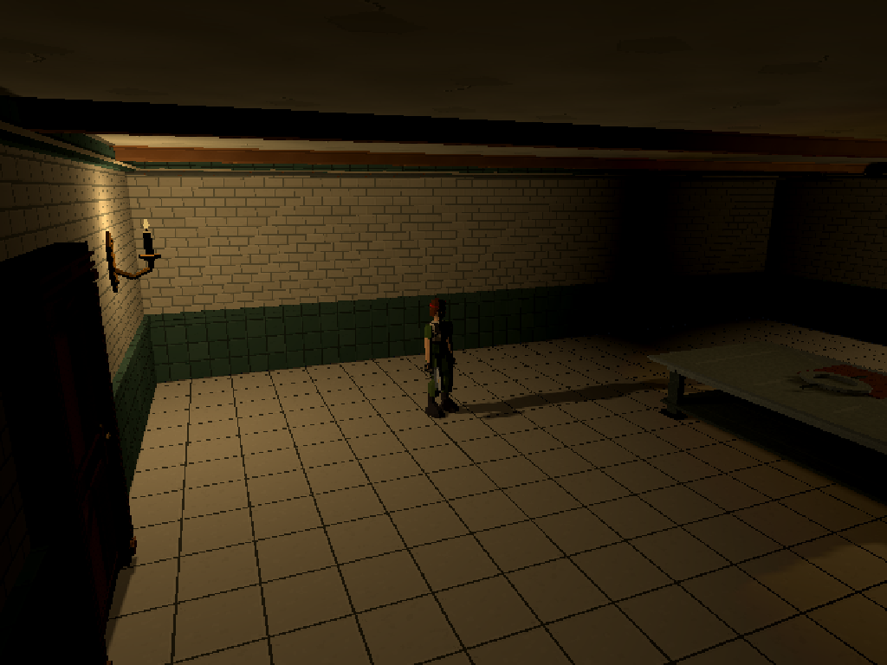
Cozinha · cena de gameplay, fixture Godot com câmera de produção.
Personagens e interfaces
Jill, Chris, Wesker, Rebecca e Barry têm aparências e kits próprios. O jogo permite até quatro humanos com personagens distintos; reconectar não recria kits. As estaturas seguem a tabela fornecida de Resident Evil 1 (1996): Jill 1,66 m, Chris 1,81 m, Wesker 1,83 m, Rebecca 1,61 m e Barry 1,86 m. Proporções e clipes preservados, com passadas e apoios revisados no Godot. A abertura leva aos modos solo/cooperativo, seleção de personagem e campanhas. VOLTAR e Esc entre essas telas e os saves usam fade de 0,4 segundo com o clique do inventário; a interação fica bloqueada até o retorno terminar.
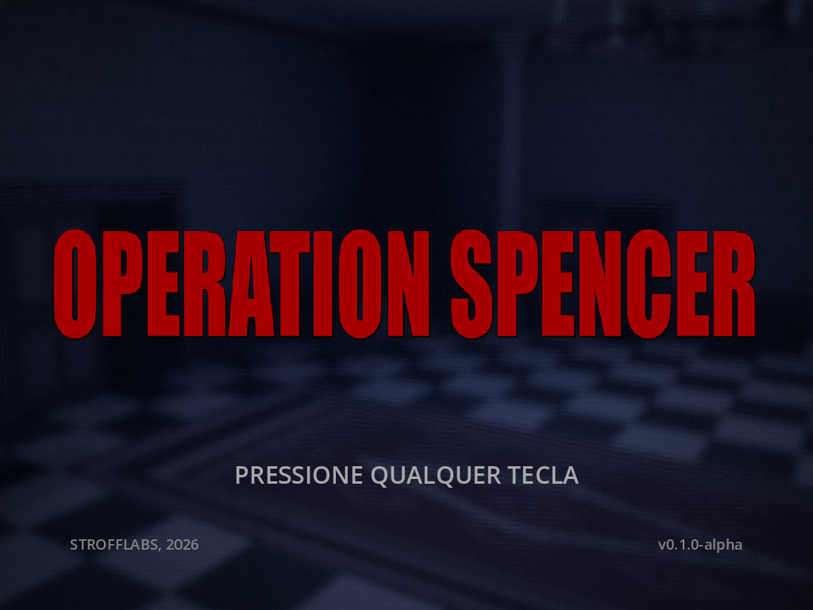
Abertura · interface capturada no Godot por fixture de apresentação.
Jill recebeu retratos revisados, com olhos semicerrados e expressão séria no inventário, incluindo Cuidado e Perigo.
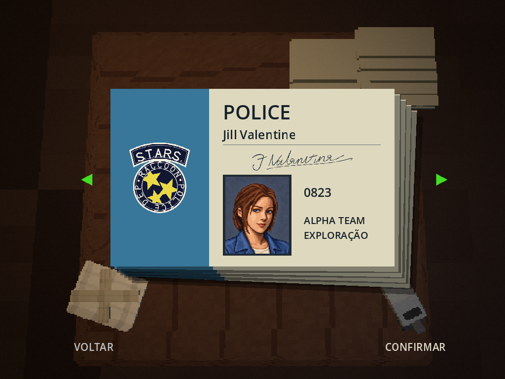
Cartões de personagem · interface no Godot, com estados dirigidos; captura anterior à revisão de estaturas.
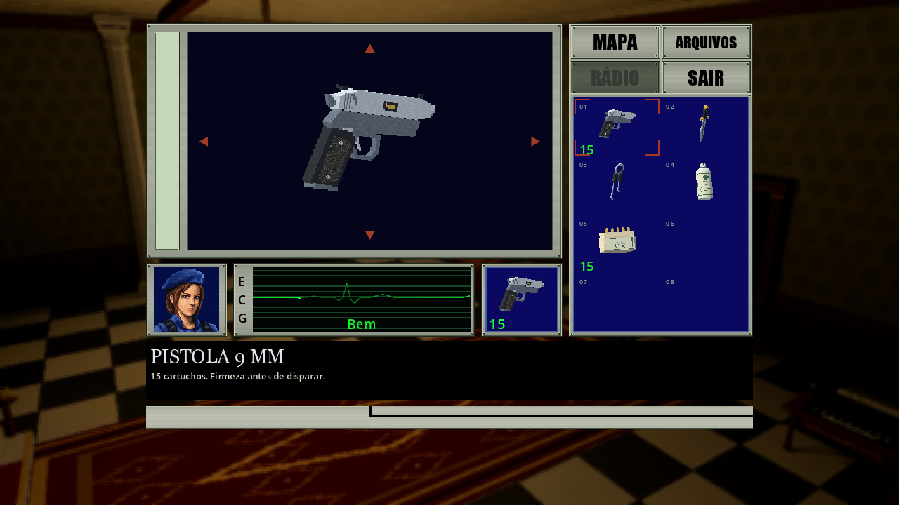
Inventário · interface no Godot. Arraste, combinações, equipamentos e baú coletivo; captura anterior à revisão de estaturas.
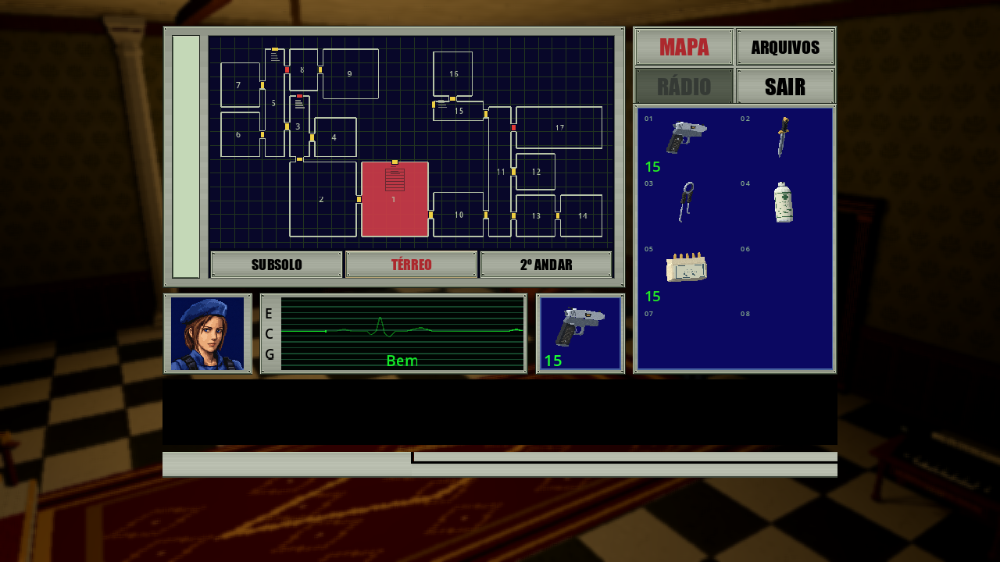
Mapa · interface no Godot. O guia da missão contém spoilers.
Direção PS1 e processo de criação
Silhuetas reconhecíveis, malhas facetadas e texturas pequenas com filtro nearest. Patamar, colunas, pisos e componentes arquitetônicos receberam oito albedos revisados em 15/10/2026, com UVs proporcionais e geradores preservados. Conceitos, modelos e resultados em jogo têm papéis diferentes no processo. As galerias preservam comparações e deixam explícita a natureza de cada imagem.
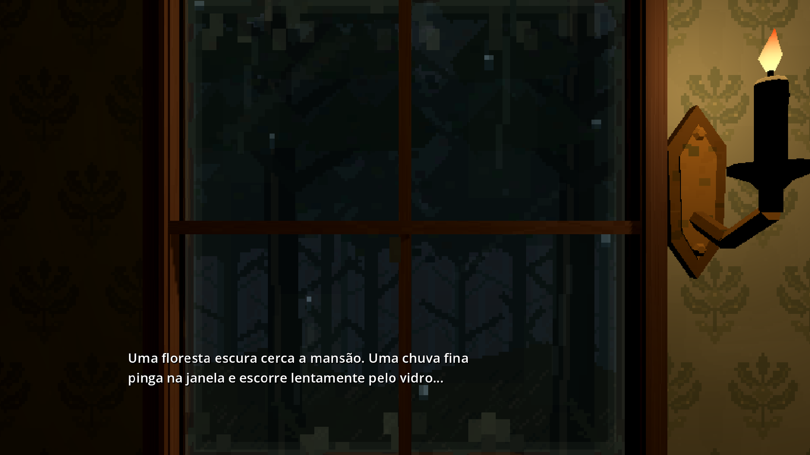
Chuva · fixture Godot. Janelas externas combinam floresta escura, gotas e SFX gravado.
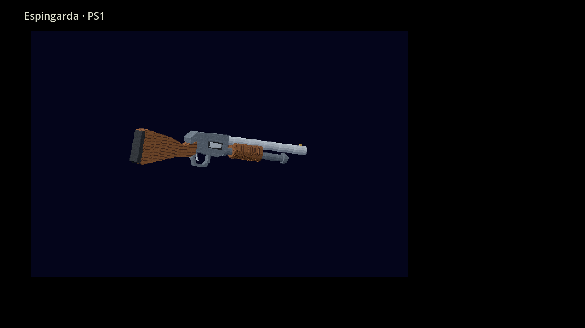
Inspeção do GLB no Godot · não é uma câmera de gameplay.
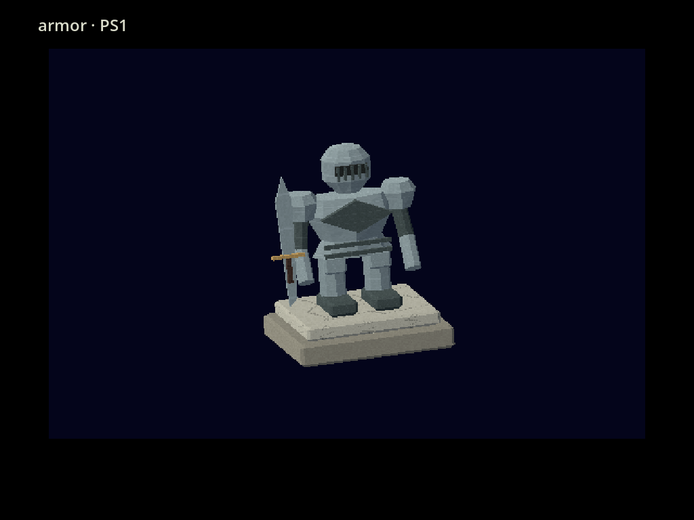
Prop de cenário em inspeção no Godot · estudo de forma e acabamento PS1.

Conceito histórico gerado por image_gen · referência para modelagem, não é GLB nem captura do jogo. Personagens e marcas pertencem aos respectivos titulares.
Explore conceitos, modelos, cenários, comparações e seleção sonora.
A coleção versionada funciona em clone limpo; o acervo completo de Build/
permanece local. Proveniência e manutenção.
Executar a fonte
Requisitos: Godot 4.7.2 stable .NET, SDK .NET 8 x64, C# 12, renderizador Compatibility. Para os validadores dos scripts, use Python 3.10+ com as dependências de arte. No PowerShell, dentro da raiz, ajuste o caminho do engine:
python -m pip install -r Tools/requirements-art.txt
powershell.exe -NoProfile -ExecutionPolicy Bypass -File .\Tools\Run.ps1 -Godot "C:\Ferramentas\Godot\Godot_v4.7.2-stable_mono_win64_console.exe"
O script verifica a toolchain, compila, executa testes Core e importa os recursos. A primeira restauração requer internet. Consulte a instalação para exportação e diagnóstico e o guia cooperativo para host/servidor. Não há promessa de desempenho ou conectividade pela Internet.
Documentação e desenvolvimento
| Assunto | Guia |
|---|---|
| Jogar | Controles, regras, missão com spoilers |
| Desenvolvimento | Arquitetura, Godot/.NET, assets e áudio |
| Qualidade | Testes e limitações, matriz manual |
| Publicação | Versões e tags, documentação visual, inventário documental |
| Referências | Fontes e adaptações, avisos de terceiros, licença do código |
| Manutenção assistida | AGENTS.md, mansao-caveman, economia de contexto |
O README anterior e o histórico anterior às tags preservam a cronologia de implementação. A política de versões usa SemVer com as convenções descritas no guia.
Fangame pessoal não oficial, sem afiliação à Capcom. Combina estética PS1 e pesquisa principal do RE1 PS1 de 1996. O cenário atual conserva adaptações e referências complementares do remake; não é réplica integral ou mapa oficial. A erva amarela melhora combinações e não aumenta a vida máxima.